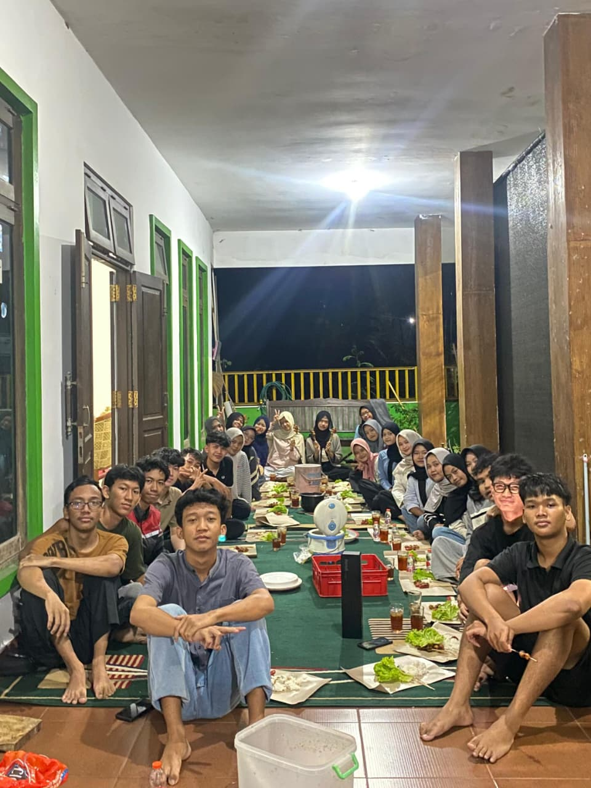
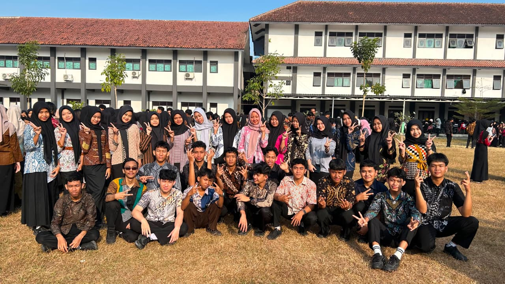
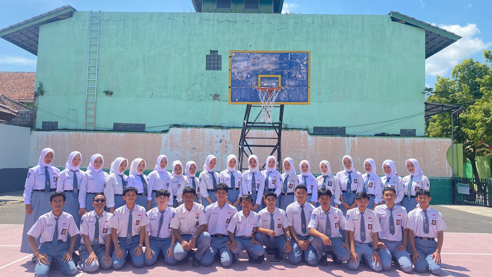
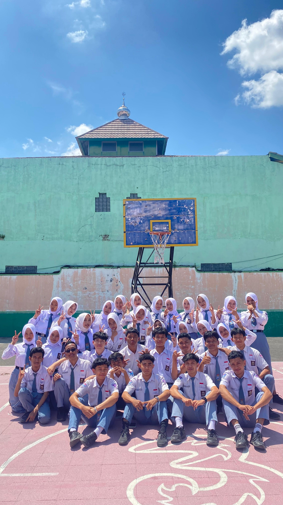

Di penghujung masa sekolah, setiap tawa dan momen kebersamaan menjadi ingatan bernilai yang tak akan pernah tergantikan.
📸 Memory Gold

🗓️ 19 Juni 2026
Malam Kehangatan & Bakar-Bakar 🍡🔥
"Bukan sekadar tentang makanan yang kita nikmati bersama, tetapi tentang hangatnya obrolan, canda tawa, dan rasa kebersamaan yang mengikat kita sebagai satu keluarga."
🎬 Play VLOG
🎥 Video Kenangan
Satu Lambaian, Sejuta Cerita 🌤️✨
"Setiap detik yang terekam adalah bukti bahwa kita pernah berjuang dan tertawa bersama. Kenangan ini akan selalu punya rumah di hati kita."
🎉 Special Event

🗓️ 28 Juli 2026
Hari Jadi Klaten ke-222 🎂🌸
"Tampil anggun berbatik bersama di lapangan sekolah. Memperingati hari lahir kota tercinta Klaten dengan bangga dan penuh kebersamaan!"
📸 Formal Look

🗓️ 28 Agustus 2026
Momen Foto Ijazah 🎓📸
"Berdiri rapi dengan seragam kebanggaan, mengabadikan senyum terbaik untuk kenangan di lembar ijazah kelak."
✨ Togetherness

🗓️ 28 Agustus 2026
Tawa di Lapangan Basket 🏀☀️
"Di bawah teriknya matahari dan langit biru, kebersamaan ini selalu punya cara untuk terasa sejuk dan menyenangkan."
🚀 Siap Melangkah ke Masa Depan!
"Masa putih abu-abu mungkin akan segera berlalu, namun setiap tawa, perjuangan, dan ikatan di TJKT 2 akan selalu menjadi cerita terindah yang kita bawa ke masa depan."